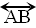
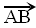

Geo ¬¬> Tierra.
Metron ¬¬> Medida.
La geometría plana solo trata de los elementos sobre un plano.
El punto y la recta no están definidos y se tratan intuitivamente.
El punto: La Huella que deja el lapiz sobre el papel. Se denota con una letra mayúscula
Ejemplo: C (Denota el punto c).
La recta: La unión de dos puntos determina una recta. Se denota con una letra minúscula
o las letras (mayúsculas) que representan a los puntos que la determinan
Ejemplo: recta l, recta AB,

Semirecta: La unión del origen y un punto "B" en la recta (hacia donde se dirige) determinan la
Semirecta 
Ángulo: Es la unión de dos semirectas que tienen el origen o punto en común.
Ejemplo: <AOB, ω, Ω, etc.
Si tenemos dos puntos pertenecientes a la recta, existe un tercer punto que está en medio de ellos. Se denota: A-C-B (El punto C está entre A y B).